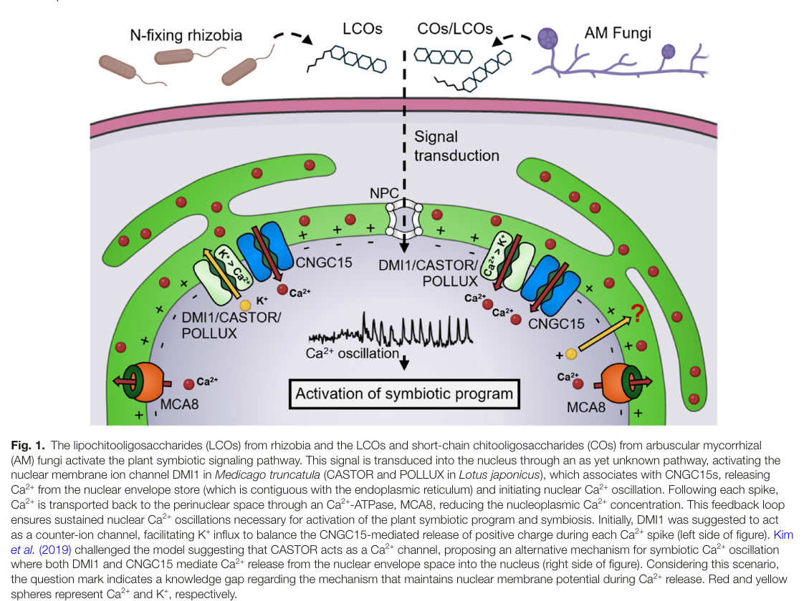

CASTOR is a multi-pass membrane cation channel of the CASTOR/POLLUX/DMI1 family that resides in the nuclear envelope of Lotus japonicus root cells. Each subunit has a pore-forming transmembrane region and a large soluble C-terminal region made of two tandem RCK (regulator of conductance for K+) domains; four subunits assemble a Ca2+-binding RCK gating ring, and CASTOR and its paralog POLLUX form separate homo-oligomeric channels. Reconstituted full-length CASTOR is a high-conductance, weakly selective cation channel permeable to K+, Na+ and Ca2+, blocked by Mg2+ at negative voltages; a truncated pore construct studied by patch clamp was strongly Ca2+-selective and activated by cytosolic/nucleosolic Ca2+. CASTOR, together with POLLUX and the nuclear-envelope Ca2+ channels CNGC15, is required to generate the perinuclear/nuclear Ca2+ oscillations ("Ca2+ spiking") that are triggered by rhizobial Nod factors and arbuscular mycorrhizal fungal signals and decoded by CCaMK. Its widely held role is as a K+-permeable counter-ion channel that balances charge during Ca2+ release from the nuclear envelope lumen, although direct Ca2+ conduction has not been excluded. castor mutants retain the initial Nod factor-induced root-hair Ca2+ influx but lack nuclear Ca2+ spiking, fail to allow rhizobial and fungal entry into root cells, and are defective in both root nodule symbiosis and arbuscular mycorrhiza.
| GO Term | Evidence | Action | Reason |
|---|---|---|---|
|
GO:0006811
monoatomic ion transport
|
IEA
GO_REF:0000002 |
ACCEPT |
Summary: InterPro2GO mapping from the CASTOR/POLLUX/SYM8-like family (IPR044849). CASTOR is an experimentally demonstrated ion channel: reconstituted CASTOR conducts monovalent cations and Ca2+ in planar lipid bilayers (PMID:19106374), and a pore construct conducts Na+ and Ca2+ in patch clamp (PMID:31420535).
Reason: The term is broad but correct; CASTOR transports monoatomic cations across the nuclear envelope. It is consistent with, and less specific than, the cation channel activity proposed below. Because the dominant physiological permeant ion (K+ versus Ca2+) is still debated, this general process term is a safe family-level statement and need not be refined.
Supporting Evidence:
PMID:19106374
CASTOR reconstituted in planar lipid bilayers exhibited ion channel activity, and the channel characteristics were altered in a symbiosis-defective mutant carrying an amino acid replacement close to the selectivity filter.
PMID:31420535
Figure 1a shows the whole-cell current in the presence of symmetrical 150 mM Na+, illustrating the cationic (Na+) currents conducted by LjCASTOR-2TM.
|
|
GO:0006813
potassium ion transport
|
IEA
GO_REF:0000002 |
ACCEPT |
Summary: InterPro2GO mapping from the RCK_N domain (IPR003148). The RCK domain alone does not determine selectivity (it is a gating/ligand-binding module shared by K+ and other channels), but for CASTOR K+ permeation is experimentally supported: reconstituted full-length CASTOR shows a weak preference for K+ over Na+ and Ca2+ (PMID:19106374), and K+ flux through CASTOR/POLLUX is the basis of the widely used counter-ion model of symbiotic nuclear Ca2+ spiking (PMID:27230377).
Reason: Although reached by a weak domain-based route, the conclusion is supported by direct bilayer measurements on full-length CASTOR. The authors argue that K+, the most abundant cellular cation, is likely the main ion carried in vivo, and the later CNGC15 work refers to the DMI1/CASTOR/POLLUX channel as the potassium-permeable channel required for oscillations. Kim et al. (PMID:31420535) report that a truncated, plasma-membrane-retargeted CASTOR construct is highly Ca2+-selective, which challenges the K+ assignment. That construct is not the native full-length channel in the nuclear envelope, and the 2008 data still show K+ permeability. K+ transport is therefore retained, with the dominant physiological ion flagged as unresolved in suggested_questions.
Supporting Evidence:
PMID:19106374
Considering that potassium is the cation with the highest concentration within the cell, together with the permeability of CASTOR and POLLUX for potassium, we conclude that potassium is likely to be the major ion going through these cation channels in vivo.
PMID:27230377
A potassium-permeable channel is known to be required for symbiotic Ca(2+) oscillations, but the calcium channels themselves have been unknown until now.
PMID:31420535
Here we show that CASTOR from Lotus japonicus is a highly selective Ca2+ channel whose activation requires cytosolic/nucleosolic Ca2+, contrary to the previous suggestion of it being a K+ channel.
|
|
GO:0031965
nuclear membrane
|
IEA
GO_REF:0000044 |
ACCEPT |
Summary: UniProt subcellular-location mapping (Nucleus membrane). Immunogold electron microscopy with a CASTOR-specific antibody placed endogenous CASTOR at the nuclear envelope of wild-type Lotus root cells, with no labeling in the castor-12 premature-stop mutant. Earlier plastid localization of overexpressed fusions (PMID:15616514) is considered an overexpression artifact.
Reason: Directly supported by localization of the native protein. The method could not resolve inner versus outer nuclear membrane, so the general nuclear membrane term is the right level of specificity. Plastid localization should not be annotated.
Supporting Evidence:
PMID:19106374
Immunogold labeling localized the endogenous CASTOR protein to the nuclear envelope of Lotus root cells.
PMID:19106374
Therefore, we could not determine whether CASTOR resides in the inner or outer membrane of the nuclear envelope or in both. Only nonspecific background labeling was observed in plastids in both the wild type and castor-12
|
|
GO:0005261
monoatomic cation channel activity
|
IDA
PMID:19106374 Lotus japonicus CASTOR and POLLUX are ion channels essential... |
NEW |
Summary: Purified CASTOR reconstituted into planar lipid bilayers forms a high-conductance (about 260 pS) cation-selective channel. The channel is weakly selective among K+, Na+ and Ca2+, is blocked by Mg2+ at negative voltage, and its properties are altered by the symbiosis-defective castor-2 pore-region substitution. Patch-clamp recordings of a CASTOR pore construct confirm cation channel activity, and point mutations that abolish channel activity also abolish nodulation (PMID:31420535).
Reason: The core molecular activity of CASTOR has no molecular-function annotation in GOA. Cation channel activity is directly demonstrated by two independent laboratories. The general cation term is used because the two studies disagree on selectivity (K+ preference in bilayers of full-length protein, PK/PCa about 1.4; strong Ca2+ selectivity of a truncated construct). Neither potassium channel activity nor calcium channel activity can yet be asserted for the native channel without taking sides in an open debate.
Supporting Evidence:
PMID:19106374
Permeability ratio determination and competition experiments reveled a weak preference of CASTOR for cations such as potassium over anions.
PMID:19106374
In the absence of magnesium, the current–voltage relationship of CASTOR was linear over this voltage range with a conductance of 260 pS
PMID:31420535
As expected, E493A mutant has much lower single-channel activity than wild-type channel, whereas no channel activity was observed for E493Q mutant, indicating that the loss of nodulation and Ca2+ spiking in Ca(II) site mutations can be attributed to the loss of channel function.
|
|
GO:0009877
nodulation
|
IMP
PMID:31420535 Ca(2+)-regulated Ca(2+) channels with an RCK gating ring con... |
NEW |
Summary: castor mutants fail to allow rhizobial entry into root cells and do not nodulate. Wild-type CASTOR restores nodulation of a CASTOR-null line, whereas channel-dead Ca2+-site mutants (D442A, E493A, E493Q) do not. CASTOR channel activity generates the nuclear Ca2+ spikes that drive the symbiotic transcriptional program.
Reason: Participation test: CASTOR does part of the work of the process. Its channel activity is a mechanistic step in generating the nuclear Ca2+ oscillations of the common symbiosis signaling pathway, and nodulation depends on that channel function, not just on the protein being present (channel-dead point mutants fail to rescue). Comparator check: proteins in the same role carry this term. The partner nuclear-envelope Ca2+ channels CNGC15A/CNGC15B and the downstream decoders CCaMK and CYCLOPS are annotated to GO:0009877 by IMP in Medicago/Lotus.
Supporting Evidence:
PMID:31420535
7a, plants expressing D442A, E493A, or E493Q mutants failed to form root nodules upon rhizobia infection demonstrating the importance of Ca2+ binding for the physiological function of CASTOR.
PMID:15616514
Here we present two highly homologous genes from Lotus japonicus, CASTOR and POLLUX, that are indispensable for microbial admission into plant cells and act upstream of intracellular calcium spiking, one of the earliest plant responses to symbiotic stimulation.
|
|
GO:0036377
arbuscular mycorrhizal association
|
IMP
PMID:15616514 Plastid proteins crucial for symbiotic fungal and bacterial ... |
NEW |
Summary: CASTOR is a common symbiosis gene. castor mutants (including castor-2, a pore mutant with altered channel properties) are defective in arbuscular mycorrhiza as well as root nodule symbiosis, and fungal entry into root epidermal cells is blocked.
Reason: Same argument as for nodulation. CASTOR's channel activity is a step in the nuclear Ca2+ spiking used by both symbioses, so it participates in the process and is not just required for it. Comparator check: CNGC15A/CNGC15B and CYCLOPS carry GO:0036377 by IMP. Evidence that CASTOR is needed for the fungal symbiosis comes from the original mutant characterisation (abstract-only in cache). The Charpentier et al. full text restates that castor-2 is defective in both symbioses.
Supporting Evidence:
PMID:15616514
CASTOR and POLLUX, that are indispensable for microbial admission into plant cells and act upstream of intracellular calcium spiking
PMID:19106374
The castor-2 mutant is defective in Ca 2+ spiking ( Figure 5 ) and both root nodule and arbuscular mycorrhiza symbioses ( Imaizumi-Anraku et al., 2005 ).
|
Q: What is the dominant ion carried by native full-length CASTOR in the nuclear envelope during symbiotic Ca2+ spiking: K+ as a counter-ion (bilayer data, PMID:19106374) or Ca2+ (truncated-construct patch clamp, PMID:31420535)? The answer decides whether potassium channel activity or calcium channel activity is the right MF term.
Q: Does CASTOR reside in the inner, outer or both nuclear membranes, and does its topology match the direction of K+ flux that the counter-ion model predicts?
Q: Does Lotus CASTOR physically associate with Lotus CNGC15 orthologs, as Medicago DMI1 does, and should that complex be captured as a GO-CAM with CASTOR and POLLUX as separate channel activities?
Experiment: Nuclear-envelope patch clamp (nucleus-attached or isolated nuclei) of wild-type, castor and castor-2 Lotus root cells under physiological ion gradients, to measure the native CASTOR-dependent current and its K+/Ca2+ selectivity.
Type: electrophysiology
Experiment: High-resolution immuno-EM or super-resolution imaging with membrane-preserving fixation to place CASTOR in the inner versus outer nuclear membrane.
Type: localization
The research report should be a detailed narrative explaining the function, biological processes, and localization of the gene product. Citations should be given for all claims.
You should prioritize authoritative reviews and primary scientific literature when conducting research. You can supplement
this with annotations you find in gene/protein databases, but these can be outdated or inaccurate.
We are specifically interested in the primary function of the gene - for enzymes, what reaction is catalyzed, and what is the substrate specificity? For transporters, what is the substrate? For structural proteins or adapters, what is the broader structural role? For signaling molecules, what is the role in the pathway.
We are interested in where in or outside the cell the gene product carries out its function.
We are also interested in the signaling or biochemical pathways in which the gene functions. We are less interested in broad pleiotropic effects, except where these elucidate the precise role.
Include evidence where possible. We are interested in both experimental evidence as well as inference from structure, evolution, or bioinformatic analysis. Precise studies should be prioritized over high-throughput, where available.
Identity check. The supplied UniProt accession Q5H8A6 denotes the ion channel CASTOR of Lotus japonicus (Lotus corniculatus var. japonicus), not the distinct Lotus channel POLLUX or a similarly named animal protein. Primary studies explicitly identify and experimentally investigate L. japonicus CASTOR; its pore-forming architecture and RCK regulatory domains agree with the supplied CASTOR/POLLUX/SYM8-family annotation. The papers examined generally use the gene name rather than printing Q5H8A6, so the accession-to-sequence correspondence rests on the UniProt identity supplied in the question. Medicago DMI1 is a related channel, described more specifically as a putative POLLUX ortholog; its experiments should not automatically be assigned to CASTOR. [UniProt: https://www.uniprot.org/uniprotkb/Q5H8A6/entry] (kim2019ca2+regulatedca2+channels pages 1-2, charpentier2008lotusjaponicuscastor pages 2-3, venkateshwaran2012therecentevolution pages 1-2)
Best-supported function. CASTOR is a nuclear-envelope cation channel required to generate symbiosis-induced nuclear/perinuclear Ca²⁺ oscillations in Lotus roots. It is part of the signaling machinery used during both rhizobial root-nodule and arbuscular-mycorrhizal symbiosis. It is not an enzyme: the relevant biochemical activity is regulated ion permeation, not catalysis. Which ion constitutes its dominant current in the native nuclear envelope—K⁺ as a charge-balancing counter-ion, Ca²⁺ released from the perinuclear store, or both—remains unresolved. This distinction is important because measurements on reconstituted full-length CASTOR and on a retargeted, truncated construct produced different selectivity estimates. (charpentier2008lotusjaponicuscastor pages 1-2, kim2019ca2+regulatedca2+channels pages 2-3, jacott2024cngc15anddmi1 pages 2-3, jacott2024cngc15anddmi1 pages 3-4)
The strongest native-protein localization experiment used anti-CASTOR immunogold electron microscopy in Lotus roots. Label accumulated at the nuclear envelope in wild type but not in the premature-stop castor-12 control; this experiment could not resolve the inner versus outer nuclear membrane. Earlier fluorescent-fusion experiments sometimes indicated plastids, but their localization depended on expression and heterologous-cell context, while native plastid labeling was nonspecific. Nuclear-envelope localization is consequently the best-supported assignment for the protein’s symbiotic function; a native plastid function is not established by those fusion observations. The perinuclear compartment between nuclear membranes is continuous with the endoplasmic-reticulum lumen and supplies Ca²⁺ for nuclear oscillations. (charpentier2008lotusjaponicuscastor pages 3-5, charpentier2008lotusjaponicuscastor pages 8-9, jacott2024cngc15anddmi1 pages 1-2)
CASTOR has a membrane pore and a large soluble regulatory region containing two tandem RCK domains per subunit. Structural analysis of that soluble region found a tetrameric gating ring comprising eight RCK domains and multiple ion-binding sites, including three assigned Ca²⁺ sites. Ca²⁺-binding residues include D442 in one cluster and E493 in another. Mutating CASTOR D442 to alanine, or E493 to alanine or glutamine, prevented restoration of rhizobial nodulation in castor plants, whereas D444A retained nodulation; the differing phenotypes caution against treating every ion-coordinating residue as equivalent. A pore-region substitution, D265N, eliminated measured channel activity. These results connect channel structure and Ca²⁺-responsive regulation to biological function, but do not alone identify the dominant ion transported in vivo. (kim2019ca2+regulatedca2+channels pages 1-2, kim2019ca2+regulatedca2+channels pages 5-6, kim2019ca2+regulatedca2+channels pages 9-10, kim2019ca2+regulatedca2+channels pages 8-9)
The following comparison keeps the direct measurements separate from their physiological interpretation.
| Question | Direct observation and conditions | Inference / qualification | Source |
|---|---|---|---|
| Where is native CASTOR localized? | Anti-CASTOR immunogold labeling accumulated at the nuclear envelope in wild-type Lotus japonicus roots but not in the castor-12 W93* control; plastid labeling was nonspecific. The preparation could not distinguish the inner from the outer nuclear membrane. | Strong evidence for native nuclear-envelope localization. Earlier plastid patterns from overexpressed fluorescent fusions in heterologous cells were context-dependent and do not override the endogenous-protein result. | Charpentier et al., Dec. 2008, DOI: 10.1105/tpc.108.063255 (charpentier2008lotusjaponicuscastor pages 8-9, charpentier2008lotusjaponicuscastor pages 3-5) |
| What did purified full-length CASTOR conduct? | CASTOR reconstituted into planar lipid bilayers had 260 pS conductance in symmetrical 250 mM KCl and weak cation preference: PK/PCl approximately 6, PK/PNa = 2, and PK/PCa = 1.4. Mg2+ produced voltage-dependent block at negative potentials. | Under these artificial high-salt conditions, CASTOR was permeable to K+, Na+, and Ca2+, with a modest preference for K+. The authors favored K+ as the physiological substrate because of cellular ion concentrations, but direct Ca2+ conduction remained possible. The 260-pS result must not be conflated with the approximately 175-pS result obtained under different conditions in 2012. | Charpentier et al., Dec. 2008, DOI: 10.1105/tpc.108.063255 (charpentier2008lotusjaponicuscastor pages 6-8, charpentier2008lotusjaponicuscastor pages 3-5) |
| What did later patch-clamp, structural, and genetic experiments show? | A plasma-membrane-targeted, truncated CASTOR-2TM construct in HEK293 cells showed PCa/PNa approximately 30, PNa/PK approximately 2, and about 220 pS conductance in symmetrical 150 mM Na+. Cytosolic Ca2+ enhanced opening up to approximately 100 micromolar and inhibited it at higher concentrations. A 1.6-angstrom structure revealed a tetrameric ring of eight RCK domains. In Lotus, D442A, E493A, and E493Q substitutions at implicated Ca2+-binding sites failed to restore nodulation, whereas D444A retained function. | Supports a Ca2+-selective, Ca2+-regulated channel mechanism and establishes that particular RCK ion-binding residues are physiologically important. However, selectivity was measured using an incomplete, retargeted construct outside the nuclear envelope; it does not identify the dominant current through native full-length CASTOR in planta. | Kim et al., Aug. 2019, DOI: 10.1038/s41467-019-11698-5 (kim2019ca2+regulatedca2+channels pages 1-2, kim2019ca2+regulatedca2+channels pages 2-3, kim2019ca2+regulatedca2+channels pages 3-4, kim2019ca2+regulatedca2+channels pages 8-9, jacott2024cngc15anddmi1 pages 1-2) |
| Is CASTOR required in planta, and what is the current model? | After treatment with 10 nM Nod factor, nuclear or perinuclear Ca2+ spiking occurred in 22 of 28 wild-type root hairs but in 0 of 23 castor-2 cells. A 2024 expert review retained two models: CASTOR and POLLUX act as K+ counter-ion channels supporting CNGC15-mediated Ca2+ release, or they contribute directly to Ca2+ release alongside CNGC15. MCA8 recaptures Ca2+ in both models. | CASTOR is unequivocally required for symbiotic Ca2+ oscillations, but the native channel's dominant physiological ion remains unresolved. Current evidence identifies CNGC15 as indispensable for Ca2+ release and often assigns the DMI1/CASTOR family a counter-ion role, without excluding CASTOR Ca2+ permeability. | Charpentier et al., Dec. 2008, DOI: 10.1105/tpc.108.063255; Jacott and del Cerro, Sept. 2024, DOI: 10.1093/jxb/erae352 (charpentier2008lotusjaponicuscastor pages 6-8, jacott2024cngc15anddmi1 pages 2-3, jacott2024cngc15anddmi1 pages 3-4, jacott2024cngc15anddmi1 media 0d9a3850) |
Table: Comparison of the principal localization, electrophysiological, structural, genetic, and current-model evidence for Lotus japonicus CASTOR Q5H8A6. The table separates direct observations from physiological interpretations and highlights the unresolved identity of its dominant native current.
In particular, the 2008 planar-bilayer measurements on reconstituted CASTOR gave approximately 260 pS conductance in symmetrical 250 mM KCl and permeability ratios of approximately Pₖ/PCl = 6, Pₖ/PNa = 2, and Pₖ/PCa = 1.4. The authors inferred that abundant cellular K⁺ might make K⁺ the more likely physiological permeant ion; they did not exclude direct Ca²⁺ release. The symbiosis-defective castor-2 A264T pore-region allele lost the wild-type voltage-dependent Mg²⁺ block, linking altered conductance regulation to the genetic phenotype. (charpentier2008lotusjaponicuscastor pages 6-8, charpentier2008lotusjaponicuscastor pages 3-5)
A 2019 study instead measured approximately P_Ca/P_Na = 30 and P_Na/P_K = 2 using a plasma-membrane-targeted CASTOR-2TM construct in heterologous-cell patches. Ca²⁺ applied to the intracellular face increased opening up to roughly 100 µM, with inhibition at higher concentrations. This is strong evidence that the tested CASTOR pore can conduct Ca²⁺ selectively and that its RCK apparatus responds to Ca²⁺. It is not a direct measurement of the complete protein operating in its native nuclear membrane, under native ionic gradients and with its signaling partners. The two studies therefore should not be combined into a single definitive in-planta substrate-specificity value. (kim2019ca2+regulatedca2+channels pages 2-3, kim2019ca2+regulatedca2+channels pages 1-2, jacott2024cngc15anddmi1 pages 1-2)
Rhizobial Nod factors and fungal symbiotic signals initiate a common symbiosis signaling pathway in which nuclear/perinuclear Ca²⁺ spikes convey information to downstream Ca²⁺/calmodulin-dependent protein kinase CCaMK, followed by regulators including CYCLOPS and symbiosis-associated gene expression. CASTOR acts at the nuclear-envelope oscillation-generating step, upstream of Ca²⁺ decoding, not as a Nod-factor receptor or a transcription factor. In a Lotus experiment using 10 nM Nod factor, spikes occurred in 22/28 wild-type root hairs versus 0/23 castor-2 root hairs; castor and pollux mutants also show defects in bacterial and fungal symbioses while retaining the distinct initial root-hair-tip Ca²⁺ influx. These observations localize CASTOR’s requirement to the nuclear signaling response rather than initial surface Ca²⁺ entry. (jacott2024cngc15anddmi1 pages 1-1, liu2022signalinganddetoxification pages 4-6, charpentier2008lotusjaponicuscastor pages 6-8, charpentier2008lotusjaponicuscastor pages 1-2)
CASTOR and POLLUX assemble predominantly as separate homocomplexes. They are normally both needed for Lotus symbiotic signaling, although POLLUX overexpression can rescue a castor nodulation defect. Their relationship is therefore neither simple identity nor an absolute inability to substitute for one another. A 2012 cross-species study found that the Lotus channels carry a serine-containing pore-filter motif, whereas Medicago DMI1 carries an alanine-containing counterpart. Introducing S266A into CASTOR reduced conductance from approximately 175 to 61 pS under that study’s measurement conditions, approaching DMI1’s approximately 64 pS; corresponding open times were approximately 4, 59, and 16 ms for wild-type CASTOR, CASTOR-S266A, and DMI1, respectively. Nevertheless, CASTOR-S266A did not by itself acquire DMI1’s full cross-species complementation capacity. Thus filter evolution changes biophysics without making CASTOR interchangeable with DMI1. The approximately 175-pS value and the 2008 260-pS value come from different experimental preparations or conditions and should not be treated as conflicting measurements under identical conditions. (charpentier2008lotusjaponicuscastor pages 2-3, charpentier2008lotusjaponicuscastor pages 6-8, venkateshwaran2012therecentevolution pages 9-11, venkateshwaran2012therecentevolution pages 2-3)
Working models and expert assessment. In one model, nuclear-envelope CNGC15 conducts Ca²⁺ from the perinuclear store toward the nucleoplasm, while CASTOR/POLLUX-family channels carry charge-balancing K⁺; the Ca²⁺-ATPase MCA8 returns Ca²⁺ to the store. In the alternative prompted by the CASTOR patch-clamp results, CASTOR-family channels also conduct Ca²⁺ during release. The models, juxtaposed in Figure 1 of a 2024 expert review, agree on CASTOR-family involvement but differ on its physiological current. The reviewers favor the counter-ion/CNGC15-release assignment as a working explanation, without claiming that CASTOR cannot conduct Ca²⁺. Medicago gain-of-function DMI1-S760N requires functional CNGC15 for sustained spontaneous oscillations, strengthening the case that CNGC15 is indispensable; because this is an experiment on Medicago DMI1, it does not directly settle Lotus CASTOR selectivity. (jacott2024cngc15anddmi1 media 0d9a3850, jacott2024cngc15anddmi1 pages 2-3, jacott2024cngc15anddmi1 pages 3-4)
The principal 2023–2024 advance for this annotation is clarification of the limits of extrapolation. A 2024 synthesis discusses AM-induced nuclear Ca²⁺ oscillations requiring DMI1 in the liverwort Marchantia paleacea, supporting an evolutionarily old channel-associated symbiosis mechanism, while cross-species complementation reveals differences in channel regulation. It also discusses 2023 work on Arabidopsis CNGC15 in root development and nitrate responses. Neither finding demonstrates a nitrate-related function for Lotus CASTOR or establishes that liverwort DMI1 has CASTOR’s precise selectivity. No more recent Lotus-CASTOR-specific assay in the evidence reviewed resolves its native permeant ion. (jacott2024cngc15anddmi1 pages 4-5, jacott2024cngc15anddmi1 pages 5-6, jacott2024cngc15anddmi1 pages 3-4)
Applications are presently better described as pathway engineering than deployment of CASTOR itself. In 2022, engineered calmodulin CaM2-R91A altered CNGC15 feedback in Medicago, increased nuclear-spike frequency and improved nodulation; early AM colonization increased, but enhanced mature mycorrhization was not sustained. A 2025 study extended manipulation of a different channel, CNGC15, to field-grown wheat and reported increased AM colonization and nutrient-related outcomes. These are demonstrations that tuning symbiotic Ca²⁺ signaling may have agricultural utility, not evidence that Q5H8A6 CASTOR has been engineered or deployed in crops. (cerro2022engineeredcam2modulates pages 5-6, cerro2022engineeredcam2modulates pages 1-2, cook2025autoactivecngc15enhances pages 5-5, cook2025autoactivecngc15enhances pages 1-2)
Functional-annotation recommendation: annotate Q5H8A6 as a Lotus japonicus nuclear-envelope, Ca²⁺-regulated cation channel essential for symbiotic nuclear Ca²⁺ oscillations and establishment of rhizobial and arbuscular-mycorrhizal associations. Record Ca²⁺ and K⁺ permeability experimentally, but mark the dominant physiological permeant ion and exact division of labor with CNGC15/POLLUX as unresolved. This wording captures direct genetic, localization, structural and electrophysiological evidence without converting either competing mechanistic model into an established fact. (charpentier2008lotusjaponicuscastor pages 3-5, charpentier2008lotusjaponicuscastor pages 6-8, kim2019ca2+regulatedca2+channels pages 2-3, kim2019ca2+regulatedca2+channels pages 8-9, jacott2024cngc15anddmi1 pages 3-4)
References
(kim2019ca2+regulatedca2+channels pages 1-2): Sunghoon Kim, Weizhong Zeng, Shane Bernard, Jun Liao, Muthusubramanian Venkateshwaran, Jean-Michel Ane, and Youxing Jiang. Ca2+-regulated ca2+ channels with an rck gating ring control plant symbiotic associations. Nature Communications, Aug 2019. URL: https://doi.org/10.1038/s41467-019-11698-5, doi:10.1038/s41467-019-11698-5. This article has 73 citations and is from a highest quality peer-reviewed journal.
(charpentier2008lotusjaponicuscastor pages 2-3): M. Charpentier, R. Bredemeier, G. Wanner, Naoya Takeda, E. Schleiff, and M. Parniske. Lotus japonicus castor and pollux are ion channels essential for perinuclear calcium spiking in legume root endosymbiosis[w]. The Plant Cell Online, 20:3467-3479, Dec 2008. URL: https://doi.org/10.1105/tpc.108.063255, doi:10.1105/tpc.108.063255. This article has 338 citations.
(venkateshwaran2012therecentevolution pages 1-2): Muthusubramanian Venkateshwaran, Ana Cosme, Lu Han, Mari Banba, Kenneth A. Satyshur, Enrico Schleiff, Martin Parniske, Haruko Imaizumi-Anraku, and Jean-Michel Ané. The recent evolution of a symbiotic ion channel in the legume family altered ion conductance and improved functionality in calcium signaling. Jun 2012. URL: https://doi.org/10.1105/tpc.112.098475, doi:10.1105/tpc.112.098475. This article has 61 citations.
(charpentier2008lotusjaponicuscastor pages 1-2): M. Charpentier, R. Bredemeier, G. Wanner, Naoya Takeda, E. Schleiff, and M. Parniske. Lotus japonicus castor and pollux are ion channels essential for perinuclear calcium spiking in legume root endosymbiosis[w]. The Plant Cell Online, 20:3467-3479, Dec 2008. URL: https://doi.org/10.1105/tpc.108.063255, doi:10.1105/tpc.108.063255. This article has 338 citations.
(kim2019ca2+regulatedca2+channels pages 2-3): Sunghoon Kim, Weizhong Zeng, Shane Bernard, Jun Liao, Muthusubramanian Venkateshwaran, Jean-Michel Ane, and Youxing Jiang. Ca2+-regulated ca2+ channels with an rck gating ring control plant symbiotic associations. Nature Communications, Aug 2019. URL: https://doi.org/10.1038/s41467-019-11698-5, doi:10.1038/s41467-019-11698-5. This article has 73 citations and is from a highest quality peer-reviewed journal.
(jacott2024cngc15anddmi1 pages 2-3): Catherine N. Jacott and Pablo del Cerro. Cngc15 and dmi1 ion channel gating in nuclear calcium signaling: opening new questions and closing controversies. Sep 2024. URL: https://doi.org/10.1093/jxb/erae352, doi:10.1093/jxb/erae352. This article has 6 citations and is from a domain leading peer-reviewed journal.
(jacott2024cngc15anddmi1 pages 3-4): Catherine N. Jacott and Pablo del Cerro. Cngc15 and dmi1 ion channel gating in nuclear calcium signaling: opening new questions and closing controversies. Sep 2024. URL: https://doi.org/10.1093/jxb/erae352, doi:10.1093/jxb/erae352. This article has 6 citations and is from a domain leading peer-reviewed journal.
(charpentier2008lotusjaponicuscastor pages 3-5): M. Charpentier, R. Bredemeier, G. Wanner, Naoya Takeda, E. Schleiff, and M. Parniske. Lotus japonicus castor and pollux are ion channels essential for perinuclear calcium spiking in legume root endosymbiosis[w]. The Plant Cell Online, 20:3467-3479, Dec 2008. URL: https://doi.org/10.1105/tpc.108.063255, doi:10.1105/tpc.108.063255. This article has 338 citations.
(charpentier2008lotusjaponicuscastor pages 8-9): M. Charpentier, R. Bredemeier, G. Wanner, Naoya Takeda, E. Schleiff, and M. Parniske. Lotus japonicus castor and pollux are ion channels essential for perinuclear calcium spiking in legume root endosymbiosis[w]. The Plant Cell Online, 20:3467-3479, Dec 2008. URL: https://doi.org/10.1105/tpc.108.063255, doi:10.1105/tpc.108.063255. This article has 338 citations.
(jacott2024cngc15anddmi1 pages 1-2): Catherine N. Jacott and Pablo del Cerro. Cngc15 and dmi1 ion channel gating in nuclear calcium signaling: opening new questions and closing controversies. Sep 2024. URL: https://doi.org/10.1093/jxb/erae352, doi:10.1093/jxb/erae352. This article has 6 citations and is from a domain leading peer-reviewed journal.
(kim2019ca2+regulatedca2+channels pages 5-6): Sunghoon Kim, Weizhong Zeng, Shane Bernard, Jun Liao, Muthusubramanian Venkateshwaran, Jean-Michel Ane, and Youxing Jiang. Ca2+-regulated ca2+ channels with an rck gating ring control plant symbiotic associations. Nature Communications, Aug 2019. URL: https://doi.org/10.1038/s41467-019-11698-5, doi:10.1038/s41467-019-11698-5. This article has 73 citations and is from a highest quality peer-reviewed journal.
(kim2019ca2+regulatedca2+channels pages 9-10): Sunghoon Kim, Weizhong Zeng, Shane Bernard, Jun Liao, Muthusubramanian Venkateshwaran, Jean-Michel Ane, and Youxing Jiang. Ca2+-regulated ca2+ channels with an rck gating ring control plant symbiotic associations. Nature Communications, Aug 2019. URL: https://doi.org/10.1038/s41467-019-11698-5, doi:10.1038/s41467-019-11698-5. This article has 73 citations and is from a highest quality peer-reviewed journal.
(kim2019ca2+regulatedca2+channels pages 8-9): Sunghoon Kim, Weizhong Zeng, Shane Bernard, Jun Liao, Muthusubramanian Venkateshwaran, Jean-Michel Ane, and Youxing Jiang. Ca2+-regulated ca2+ channels with an rck gating ring control plant symbiotic associations. Nature Communications, Aug 2019. URL: https://doi.org/10.1038/s41467-019-11698-5, doi:10.1038/s41467-019-11698-5. This article has 73 citations and is from a highest quality peer-reviewed journal.
(charpentier2008lotusjaponicuscastor pages 6-8): M. Charpentier, R. Bredemeier, G. Wanner, Naoya Takeda, E. Schleiff, and M. Parniske. Lotus japonicus castor and pollux are ion channels essential for perinuclear calcium spiking in legume root endosymbiosis[w]. The Plant Cell Online, 20:3467-3479, Dec 2008. URL: https://doi.org/10.1105/tpc.108.063255, doi:10.1105/tpc.108.063255. This article has 338 citations.
(kim2019ca2+regulatedca2+channels pages 3-4): Sunghoon Kim, Weizhong Zeng, Shane Bernard, Jun Liao, Muthusubramanian Venkateshwaran, Jean-Michel Ane, and Youxing Jiang. Ca2+-regulated ca2+ channels with an rck gating ring control plant symbiotic associations. Nature Communications, Aug 2019. URL: https://doi.org/10.1038/s41467-019-11698-5, doi:10.1038/s41467-019-11698-5. This article has 73 citations and is from a highest quality peer-reviewed journal.
(jacott2024cngc15anddmi1 media 0d9a3850): Catherine N. Jacott and Pablo del Cerro. Cngc15 and dmi1 ion channel gating in nuclear calcium signaling: opening new questions and closing controversies. Sep 2024. URL: https://doi.org/10.1093/jxb/erae352, doi:10.1093/jxb/erae352. This article has 6 citations and is from a domain leading peer-reviewed journal.
(jacott2024cngc15anddmi1 pages 1-1): Catherine N. Jacott and Pablo del Cerro. Cngc15 and dmi1 ion channel gating in nuclear calcium signaling: opening new questions and closing controversies. Sep 2024. URL: https://doi.org/10.1093/jxb/erae352, doi:10.1093/jxb/erae352. This article has 6 citations and is from a domain leading peer-reviewed journal.
(liu2022signalinganddetoxification pages 4-6): Yao Liu, Guandi He, Tengbing He, and Muhammad Saleem. Signaling and detoxification strategies in plant-microbes symbiosis under heavy metal stress: a mechanistic understanding. Microorganisms, 11:69, Dec 2022. URL: https://doi.org/10.3390/microorganisms11010069, doi:10.3390/microorganisms11010069. This article has 37 citations.
(venkateshwaran2012therecentevolution pages 9-11): Muthusubramanian Venkateshwaran, Ana Cosme, Lu Han, Mari Banba, Kenneth A. Satyshur, Enrico Schleiff, Martin Parniske, Haruko Imaizumi-Anraku, and Jean-Michel Ané. The recent evolution of a symbiotic ion channel in the legume family altered ion conductance and improved functionality in calcium signaling. Jun 2012. URL: https://doi.org/10.1105/tpc.112.098475, doi:10.1105/tpc.112.098475. This article has 61 citations.
(venkateshwaran2012therecentevolution pages 2-3): Muthusubramanian Venkateshwaran, Ana Cosme, Lu Han, Mari Banba, Kenneth A. Satyshur, Enrico Schleiff, Martin Parniske, Haruko Imaizumi-Anraku, and Jean-Michel Ané. The recent evolution of a symbiotic ion channel in the legume family altered ion conductance and improved functionality in calcium signaling. Jun 2012. URL: https://doi.org/10.1105/tpc.112.098475, doi:10.1105/tpc.112.098475. This article has 61 citations.
(jacott2024cngc15anddmi1 pages 4-5): Catherine N. Jacott and Pablo del Cerro. Cngc15 and dmi1 ion channel gating in nuclear calcium signaling: opening new questions and closing controversies. Sep 2024. URL: https://doi.org/10.1093/jxb/erae352, doi:10.1093/jxb/erae352. This article has 6 citations and is from a domain leading peer-reviewed journal.
(jacott2024cngc15anddmi1 pages 5-6): Catherine N. Jacott and Pablo del Cerro. Cngc15 and dmi1 ion channel gating in nuclear calcium signaling: opening new questions and closing controversies. Sep 2024. URL: https://doi.org/10.1093/jxb/erae352, doi:10.1093/jxb/erae352. This article has 6 citations and is from a domain leading peer-reviewed journal.
(cerro2022engineeredcam2modulates pages 5-6): Pablo del Cerro, Nicola M. Cook, Rik Huisman, Pierre Dangeville, Lauren E. Grubb, Clemence Marchal, Anson Ho Ching Lam, and Myriam Charpentier. Engineered cam2 modulates nuclear calcium oscillation and enhances legume root nodule symbiosis. Proceedings of the National Academy of Sciences of the United States of America, Mar 2022. URL: https://doi.org/10.1073/pnas.2200099119, doi:10.1073/pnas.2200099119. This article has 32 citations and is from a highest quality peer-reviewed journal.
(cerro2022engineeredcam2modulates pages 1-2): Pablo del Cerro, Nicola M. Cook, Rik Huisman, Pierre Dangeville, Lauren E. Grubb, Clemence Marchal, Anson Ho Ching Lam, and Myriam Charpentier. Engineered cam2 modulates nuclear calcium oscillation and enhances legume root nodule symbiosis. Proceedings of the National Academy of Sciences of the United States of America, Mar 2022. URL: https://doi.org/10.1073/pnas.2200099119, doi:10.1073/pnas.2200099119. This article has 32 citations and is from a highest quality peer-reviewed journal.
(cook2025autoactivecngc15enhances pages 5-5): Nicola M. Cook, Giulia Gobbato, Catherine N. Jacott, Clemence Marchal, Chen Yun Hsieh, Anson Ho Ching Lam, James Simmonds, Pablo del Cerro, Pilar Navarro Gomez, Clemence Rodney, Neftaly Cruz-Mireles, Cristobal Uauy, Wilfried Haerty, David M. Lawson, and Myriam Charpentier. Autoactive cngc15 enhances root endosymbiosis in legume and wheat. Nature, 638:752-759, Jan 2025. URL: https://doi.org/10.1038/s41586-024-08424-7, doi:10.1038/s41586-024-08424-7. This article has 49 citations and is from a highest quality peer-reviewed journal.
(cook2025autoactivecngc15enhances pages 1-2): Nicola M. Cook, Giulia Gobbato, Catherine N. Jacott, Clemence Marchal, Chen Yun Hsieh, Anson Ho Ching Lam, James Simmonds, Pablo del Cerro, Pilar Navarro Gomez, Clemence Rodney, Neftaly Cruz-Mireles, Cristobal Uauy, Wilfried Haerty, David M. Lawson, and Myriam Charpentier. Autoactive cngc15 enhances root endosymbiosis in legume and wheat. Nature, 638:752-759, Jan 2025. URL: https://doi.org/10.1038/s41586-024-08424-7, doi:10.1038/s41586-024-08424-7. This article has 49 citations and is from a highest quality peer-reviewed journal.
(charpentier2016nuclearlocalizedcyclicnucleotide–gated pages 6-10): Myriam Charpentier, Jongho Sun, Teresa Vaz Martins, Guru V. Radhakrishnan, Kim Findlay, Eleni Soumpourou, Julien Thouin, Anne-Aliénor Véry, Dale Sanders, Richard J. Morris, and Giles E. D. Oldroyd. Nuclear-localized cyclic nucleotide–gated channels mediate symbiotic calcium oscillations. Science, 352:1102-1105, May 2016. URL: https://doi.org/10.1126/science.aae0109, doi:10.1126/science.aae0109. This article has 387 citations and is from a highest quality peer-reviewed journal.

CASTOR-deep-research-falcon.md (present).monoatomic cation channel activity (GO:0005261). K+ transport is kept because full-length bilayer data support it. Calcium channel activity is not asserted.id: Q5H8A6
gene_symbol: CASTOR
product_type: PROTEIN
status: COMPLETE
taxon:
id: NCBITaxon:34305
label: Lotus japonicus
description: >-
CASTOR is a multi-pass membrane cation channel of the CASTOR/POLLUX/DMI1 family
that resides in the nuclear envelope of Lotus japonicus root cells. Each subunit
has a pore-forming transmembrane region and a large soluble C-terminal region made
of two tandem RCK (regulator of conductance for K+) domains; four subunits assemble
a Ca2+-binding RCK gating ring, and CASTOR and its paralog POLLUX form separate
homo-oligomeric channels. Reconstituted full-length CASTOR is a high-conductance,
weakly selective cation channel permeable to K+, Na+ and Ca2+, blocked by Mg2+ at
negative voltages; a truncated pore construct studied by patch clamp was strongly
Ca2+-selective and activated by cytosolic/nucleosolic Ca2+. CASTOR, together with
POLLUX and the nuclear-envelope Ca2+ channels CNGC15, is required to generate the
perinuclear/nuclear Ca2+ oscillations ("Ca2+ spiking") that are triggered by
rhizobial Nod factors and arbuscular mycorrhizal fungal signals and decoded by
CCaMK. Its widely held role is as a K+-permeable counter-ion channel that balances
charge during Ca2+ release from the nuclear envelope lumen, although direct Ca2+
conduction has not been excluded. castor mutants retain the initial Nod
factor-induced root-hair Ca2+ influx but lack nuclear Ca2+ spiking, fail to allow
rhizobial and fungal entry into root cells, and are defective in both root nodule
symbiosis and arbuscular mycorrhiza.
existing_annotations:
- term:
id: GO:0006811
label: monoatomic ion transport
evidence_type: IEA
original_reference_id: GO_REF:0000002
qualifier: involved_in
supporting_entities:
- InterPro:IPR044849
review:
summary: >-
InterPro2GO mapping from the CASTOR/POLLUX/SYM8-like family (IPR044849). CASTOR
is an experimentally demonstrated ion channel: reconstituted CASTOR conducts
monovalent cations and Ca2+ in planar lipid bilayers (PMID:19106374), and a pore
construct conducts Na+ and Ca2+ in patch clamp (PMID:31420535).
action: ACCEPT
reason: >-
The term is broad but correct; CASTOR transports monoatomic cations across the
nuclear envelope. It is consistent with, and less specific than, the cation
channel activity proposed below. Because the dominant physiological permeant ion
(K+ versus Ca2+) is still debated, this general process term is a safe
family-level statement and need not be refined.
supported_by:
- reference_id: PMID:19106374
supporting_text: CASTOR reconstituted in planar lipid bilayers exhibited ion channel
activity, and the channel characteristics were altered in a symbiosis-defective
mutant carrying an amino acid replacement close to the selectivity filter.
- reference_id: PMID:31420535
supporting_text: Figure 1a shows the whole-cell current in the presence of symmetrical
150 mM Na+, illustrating the cationic (Na+) currents conducted by LjCASTOR-2TM.
- term:
id: GO:0006813
label: potassium ion transport
evidence_type: IEA
original_reference_id: GO_REF:0000002
qualifier: involved_in
supporting_entities:
- InterPro:IPR003148
review:
summary: >-
InterPro2GO mapping from the RCK_N domain (IPR003148). The RCK domain alone does
not determine selectivity (it is a gating/ligand-binding module shared by K+ and
other channels), but for CASTOR K+ permeation is experimentally supported:
reconstituted full-length CASTOR shows a weak preference for K+ over Na+ and Ca2+
(PMID:19106374), and K+ flux through CASTOR/POLLUX is the basis of the widely
used counter-ion model of symbiotic nuclear Ca2+ spiking (PMID:27230377).
action: ACCEPT
reason: >-
Although reached by a weak domain-based route, the conclusion is supported by
direct bilayer measurements on full-length CASTOR. The authors argue that K+, the
most abundant cellular cation, is likely the main ion carried in vivo, and the
later CNGC15 work refers to the DMI1/CASTOR/POLLUX channel as the
potassium-permeable channel required for oscillations. Kim et al. (PMID:31420535)
report that a truncated, plasma-membrane-retargeted CASTOR construct is highly
Ca2+-selective, which challenges the K+ assignment. That construct is not the
native full-length channel in the nuclear envelope, and the 2008 data still
show K+ permeability. K+ transport is therefore retained, with the dominant
physiological ion flagged as unresolved in suggested_questions.
supported_by:
- reference_id: PMID:19106374
supporting_text: Considering that potassium is the cation with the highest concentration
within the cell, together with the permeability of CASTOR and POLLUX for potassium,
we conclude that potassium is likely to be the major ion going through these
cation channels in vivo.
- reference_id: PMID:27230377
supporting_text: A potassium-permeable channel is known to be required for symbiotic
Ca(2+) oscillations, but the calcium channels themselves have been unknown until
now.
- reference_id: PMID:31420535
supporting_text: Here we show that CASTOR from Lotus japonicus is a highly selective
Ca2+ channel whose activation requires cytosolic/nucleosolic Ca2+, contrary to the
previous suggestion of it being a K+ channel.
- term:
id: GO:0031965
label: nuclear membrane
evidence_type: IEA
original_reference_id: GO_REF:0000044
qualifier: located_in
supporting_entities:
- UniProtKB-SubCell:SL-0182
review:
summary: >-
UniProt subcellular-location mapping (Nucleus membrane). Immunogold electron
microscopy with a CASTOR-specific antibody placed endogenous CASTOR at the
nuclear envelope of wild-type Lotus root cells, with no labeling in the castor-12
premature-stop mutant. Earlier plastid localization of overexpressed fusions
(PMID:15616514) is considered an overexpression artifact.
action: ACCEPT
reason: >-
Directly supported by localization of the native protein. The method could not
resolve inner versus outer nuclear membrane, so the general nuclear membrane term
is the right level of specificity. Plastid localization should not be annotated.
supported_by:
- reference_id: PMID:19106374
supporting_text: Immunogold labeling localized the endogenous CASTOR protein to the
nuclear envelope of Lotus root cells.
- reference_id: PMID:19106374
supporting_text: Therefore, we could not determine whether CASTOR resides in the inner
or outer membrane of the nuclear envelope or in both. Only nonspecific background
labeling was observed in plastids in both the wild type and castor-12
- term:
id: GO:0005261
label: monoatomic cation channel activity
evidence_type: IDA
original_reference_id: PMID:19106374
review:
summary: >-
Purified CASTOR reconstituted into planar lipid bilayers forms a high-conductance
(about 260 pS) cation-selective channel. The channel is weakly selective among
K+, Na+ and Ca2+, is blocked by Mg2+ at negative voltage, and its properties are
altered by the symbiosis-defective castor-2 pore-region substitution. Patch-clamp
recordings of a CASTOR pore construct confirm cation channel activity, and point
mutations that abolish channel activity also abolish nodulation (PMID:31420535).
action: NEW
reason: >-
The core molecular activity of CASTOR has no molecular-function annotation in
GOA. Cation channel activity is directly demonstrated by two independent
laboratories. The general cation term is used because the two studies disagree
on selectivity (K+ preference in bilayers of full-length protein, PK/PCa about
1.4; strong Ca2+ selectivity of a truncated construct). Neither potassium channel
activity nor calcium channel activity can yet be asserted for the native channel
without taking sides in an open debate.
supported_by:
- reference_id: PMID:19106374
supporting_text: Permeability ratio determination and competition experiments reveled
a weak preference of CASTOR for cations such as potassium over anions.
- reference_id: PMID:19106374
supporting_text: In the absence of magnesium, the current–voltage relationship of
CASTOR was linear over this voltage range with a conductance of 260 pS
- reference_id: PMID:31420535
supporting_text: As expected, E493A mutant has much lower single-channel activity
than wild-type channel, whereas no channel activity was observed for E493Q mutant,
indicating that the loss of nodulation and Ca2+ spiking in Ca(II) site mutations
can be attributed to the loss of channel function.
- term:
id: GO:0009877
label: nodulation
evidence_type: IMP
original_reference_id: PMID:31420535
review:
summary: >-
castor mutants fail to allow rhizobial entry into root cells and do not nodulate.
Wild-type CASTOR restores nodulation of a CASTOR-null line, whereas
channel-dead Ca2+-site mutants (D442A, E493A, E493Q) do not. CASTOR channel
activity generates the nuclear Ca2+ spikes that drive the symbiotic
transcriptional program.
action: NEW
reason: >-
Participation test: CASTOR does part of the work of the process. Its channel
activity is a mechanistic step in generating the nuclear Ca2+ oscillations of the
common symbiosis signaling pathway, and nodulation depends on that channel
function, not just on the protein being present (channel-dead point mutants fail
to rescue). Comparator check: proteins in the same role carry this term. The
partner nuclear-envelope Ca2+ channels CNGC15A/CNGC15B and the downstream decoders
CCaMK and CYCLOPS are annotated to GO:0009877 by IMP in Medicago/Lotus.
supported_by:
- reference_id: PMID:31420535
supporting_text: 7a, plants expressing D442A, E493A, or E493Q mutants failed to form
root nodules upon rhizobia infection demonstrating the importance of Ca2+ binding
for the physiological function of CASTOR.
- reference_id: PMID:15616514
supporting_text: Here we present two highly homologous genes from Lotus japonicus,
CASTOR and POLLUX, that are indispensable for microbial admission into plant cells
and act upstream of intracellular calcium spiking, one of the earliest plant responses
to symbiotic stimulation.
- term:
id: GO:0036377
label: arbuscular mycorrhizal association
evidence_type: IMP
original_reference_id: PMID:15616514
review:
summary: >-
CASTOR is a common symbiosis gene. castor mutants (including castor-2, a pore
mutant with altered channel properties) are defective in arbuscular mycorrhiza as
well as root nodule symbiosis, and fungal entry into root epidermal cells is
blocked.
action: NEW
reason: >-
Same argument as for nodulation. CASTOR's channel activity is a step in the
nuclear Ca2+ spiking used by both symbioses, so it participates in the process
and is not just required for it. Comparator check: CNGC15A/CNGC15B and CYCLOPS
carry GO:0036377 by IMP. Evidence that CASTOR is needed for the fungal symbiosis
comes from the original mutant characterisation (abstract-only in cache). The
Charpentier et al. full text restates that castor-2 is defective in both symbioses.
supported_by:
- reference_id: PMID:15616514
supporting_text: CASTOR and POLLUX, that are indispensable for microbial admission into
plant cells and act upstream of intracellular calcium spiking
- reference_id: PMID:19106374
supporting_text: The castor-2 mutant is defective in Ca 2+ spiking ( Figure 5 ) and
both root nodule and arbuscular mycorrhiza symbioses ( Imaizumi-Anraku et al., 2005
).
core_functions:
- description: >-
Nuclear-envelope cation channel (homo-oligomeric, with a Ca2+-binding RCK gating
ring) whose ion conductance, together with POLLUX and the CNGC15 Ca2+ channels, is
needed to generate symbiotic nuclear/perinuclear Ca2+ oscillations. It is generally
modelled as a K+-permeable counter-ion channel that compensates charge during Ca2+
release from the nuclear envelope lumen; direct Ca2+ conduction is debated.
molecular_function:
id: GO:0005261
label: monoatomic cation channel activity
directly_involved_in:
- id: GO:0009877
label: nodulation
- id: GO:0036377
label: arbuscular mycorrhizal association
- id: GO:0006813
label: potassium ion transport
locations:
- id: GO:0031965
label: nuclear membrane
supported_by:
- reference_id: PMID:19106374
supporting_text: Our data are consistent with a role of CASTOR and POLLUX in modulating
the nuclear envelope membrane potential. They could either trigger the opening of
calcium release channels or compensate the charge release during the calcium efflux
as counter ion channels.
- reference_id: PMID:16903357
supporting_text: whereas five classes of mutants (symRK, castor, pollux, nup133, and
sym24) defective for calcium spiking retained a calcium flux.
- reference_id: PMID:27230377
supporting_text: We demonstrate that the cyclic nucleotide-gated channels form a complex
with the postassium-permeable channel, which modulates nuclear Ca(2+) release.
- reference_id: file:LOTJA/CASTOR/CASTOR-deep-research-falcon.md
supporting_text: 'It is not an enzyme: the relevant biochemical activity is regulated
ion permeation, not catalysis.'
references:
- id: PMID:15616514
title: Plastid proteins crucial for symbiotic fungal and bacterial entry into plant
roots.
findings:
- statement: CASTOR and POLLUX are common symbiosis genes required for rhizobial and
fungal entry into root cells and act upstream of Ca2+ spiking.
supporting_text: Here we present two highly homologous genes from Lotus japonicus,
CASTOR and POLLUX, that are indispensable for microbial admission into plant cells
and act upstream of intracellular calcium spiking
reference_review:
relevance: HIGH
correctness: VERIFIED
review_notes: Gene identification paper (abstract only in cache). The plastid
localization it reports came from overexpressed fusions and was later revised to
nuclear envelope by PMID:19106374.
- id: PMID:16903357
title: Analysis of Nod-factor-induced calcium signaling in root hairs of symbiotically
defective mutants of Lotus japonicus.
findings:
- statement: castor mutants lack Nod factor-induced Ca2+ spiking but retain the initial
Ca2+ flux.
supporting_text: whereas five classes of mutants (symRK, castor, pollux, nup133, and
sym24) defective for calcium spiking retained a calcium flux.
reference_review:
relevance: HIGH
correctness: VERIFIED
review_notes: Abstract only in cache; supports the genetic placement of CASTOR at
the Ca2+ spiking step.
- id: PMID:19106374
title: Lotus japonicus CASTOR and POLLUX are ion channels essential for perinuclear
calcium spiking in legume root endosymbiosis.
findings:
- statement: Endogenous CASTOR localizes to the nuclear envelope (immunogold).
supporting_text: Immunogold labeling localized the endogenous CASTOR protein to the
nuclear envelope of Lotus root cells.
- statement: Reconstituted CASTOR is a weakly selective, K+-preferring cation channel.
supporting_text: Permeability ratio determination and competition experiments reveled
a weak preference of CASTOR for cations such as potassium over anions.
- statement: CASTOR and POLLUX form separate homocomplexes.
supporting_text: Here, we show that CASTOR and POLLUX form two independent homocomplexes
in planta.
reference_review:
relevance: HIGH
correctness: VERIFIED
review_notes: Full text cached. Primary source for localization, channel activity and
the counter-ion model.
- id: PMID:22706284
title: The recent evolution of a symbiotic ion channel in the legume family altered
ion conductance and improved functionality in calcium signaling.
findings:
- statement: CASTOR and POLLUX are both required in Lotus; Medicago DMI1 alone can
rescue castor, pollux and double mutants.
supporting_text: castor, pollux, and castor pollux double mutants of L. japonicus were
rescued by DMI1 alone, while both Lj-CASTOR and Lj-POLLUX were required for rescuing
a dmi1 mutant of M. truncatula.
reference_review:
relevance: MEDIUM
correctness: VERIFIED
review_notes: Abstract only in cache. Selectivity-filter evolution and bilayer
conductance of CASTOR versus DMI1.
- id: PMID:31420535
title: Ca(2+)-regulated Ca(2+) channels with an RCK gating ring control plant symbiotic
associations.
findings:
- statement: A CASTOR pore construct is a Ca2+-activated, Ca2+-selective channel;
gating-ring Ca2+ sites are needed for nodulation.
supporting_text: Here we show that CASTOR from Lotus japonicus is a highly selective
Ca2+ channel whose activation requires cytosolic/nucleosolic Ca2+, contrary to the
previous suggestion of it being a K+ channel.
reference_review:
relevance: HIGH
correctness: DISPUTED
review_notes: Full text cached. The structure and the nodulation rescue data are
solid. The Ca2+-selectivity claim rests on a truncated, plasma-membrane-retargeted
construct (CASTOR-2TM) and conflicts with bilayer data on full-length protein;
later reviews keep the counter-ion model as the working hypothesis.
- id: PMID:27230377
title: Nuclear-localized cyclic nucleotide-gated channels mediate symbiotic calcium
oscillations.
findings:
- statement: CNGC15 channels are the nuclear-envelope Ca2+ channels; they complex with
the K+-permeable DMI1 channel, which modulates nuclear Ca2+ release.
supporting_text: We demonstrate that the cyclic nucleotide-gated channels form a complex
with the postassium-permeable channel, which modulates nuclear Ca(2+) release.
reference_review:
relevance: MEDIUM
correctness: VERIFIED
review_notes: Abstract only in cache. Medicago study (DMI1, the POLLUX ortholog);
gives the pathway context for the counter-ion role, not CASTOR-specific data.
- id: PMID:39140702
title: 'CNGC15 and DMI1 ion channel gating in nuclear calcium signaling: opening new
questions and closing controversies.'
findings:
- statement: The exact function of the DMI1/CASTOR/POLLUX channel in nuclear Ca2+
spiking remains unresolved.
supporting_text: Despite more than 20 years of research on symbiotic nuclear Ca2+
spiking, important questions remain, including the exact function of the DMI1
channel.
reference_review:
relevance: MEDIUM
correctness: VERIFIED
review_notes: Review (abstract only in cache); frames the K+ counter-ion versus direct
Ca2+ release debate.
- id: file:LOTJA/CASTOR/CASTOR-deep-research-falcon.md
title: Deep research report on Lotus japonicus CASTOR (Falcon)
findings: []
- id: GO_REF:0000002
title: Gene Ontology annotation through association of InterPro records with GO
terms
findings: []
- id: GO_REF:0000044
title: Gene Ontology annotation based on UniProtKB/Swiss-Prot Subcellular Location
vocabulary mapping, accompanied by conservative changes to GO terms applied by
UniProt
findings: []
suggested_questions:
- question: >-
What is the dominant ion carried by native full-length CASTOR in the nuclear
envelope during symbiotic Ca2+ spiking: K+ as a counter-ion (bilayer data,
PMID:19106374) or Ca2+ (truncated-construct patch clamp, PMID:31420535)? The answer
decides whether potassium channel activity or calcium channel activity is the right
MF term.
- question: >-
Does CASTOR reside in the inner, outer or both nuclear membranes, and does its
topology match the direction of K+ flux that the counter-ion model predicts?
- question: >-
Does Lotus CASTOR physically associate with Lotus CNGC15 orthologs, as Medicago DMI1
does, and should that complex be captured as a GO-CAM with CASTOR and POLLUX as
separate channel activities?
suggested_experiments:
- description: >-
Nuclear-envelope patch clamp (nucleus-attached or isolated nuclei) of wild-type,
castor and castor-2 Lotus root cells under physiological ion gradients, to measure
the native CASTOR-dependent current and its K+/Ca2+ selectivity.
experiment_type: electrophysiology
- description: >-
High-resolution immuno-EM or super-resolution imaging with membrane-preserving
fixation to place CASTOR in the inner versus outer nuclear membrane.
experiment_type: localization